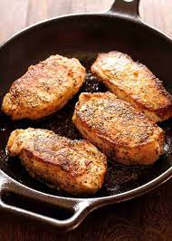

Crazy Chops

No Shake and Bake?
Nope, we're using the sous vide again. If you want to know more about the sous vide,
check out our steak recipe. Either way, we're using pork chops this time and
some of our steps are the same however, the prep in this one is important.
Ingredients
- 4 Thick Cut Boneless Pork Chops
- 12 oz Carona Beer
- Cajun Seasoning
Steps
- Set chops in a deep bowl and cover with the Carona beer. Let it set in the refrigerator for 8 hours .
- Remove cops and pat dry.
- Cover both sides of the chop with lots of cajun seasoning and place in the sous vide bags to vaccum seal.
- Set the sous vide water heater to 141° F
- Place the sealed bag in to the water when the desired tempature is reached for at least 90 minutes.
- When there are 30 minutes left on the sous vide, place a cast iron skillet in the oven and set to broil.
- When the 90 minutes is up, turn a stove top burner to high and place hot skillet on the burner.
- Remove the bag from the sous vide, remove the chops and place them on the skillet.
- Turn the chops over after 45 seconds and remove after another 45 seconds.
- Remove the chops and serve.
Home